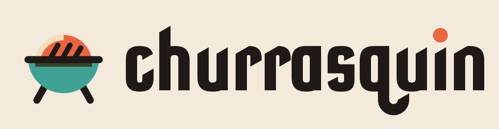
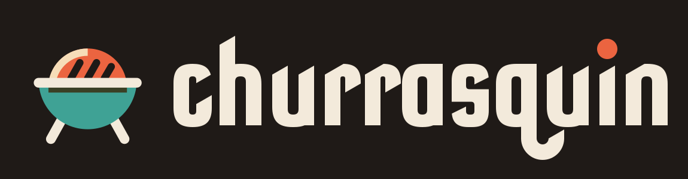

Se não se lê como churrasco na hora, não é o símbolo.
O símbolo anterior (três círculos sobre uma barra) precisava de legenda: lia como rostinho ou bolas. Refizemos com a mesma regra dos ícones aprovados: primeiro a silhueta real do objeto, depois o estilo blend. Sete caminhos foram testados às cegas a 96 e 24 px; ficou a churrasqueira com o bife na grelha — capa de gordura, marcas de brasa e a carne afundando na bacia chimichurri, onde as tintas se multiplicam.
- Silhueta primeiro: a forma real do objeto vem antes do estilo.
- Círculo é a forma-mãe: bacia, bife, brasa, pingo do i.
- Multiply é a regra de cor: duas tintas sempre geram uma terceira, nunca opacidade.
- Riso é a textura: retícula e desregistro nas ilustrações, nunca no símbolo pequeno.
Grade de 13x. Bacia de 10x, bife de 8x.
Módulo x = 1/13 da largura. Bacia: semicírculo r = 5x. Bife: segmento de círculo r = 4x, afundado 0.75x na bacia — a faixa de sobreposição é vermelhão × chimichurri em multiply. Capa de gordura: anel de 0.75x no quadrante superior. Grelha 11x × 1x, marcas e pés com o traço mínimo dos ícones. O pingo do i continua brasa redonda: é a brasa que falta embaixo da grelha.
A faca continua. O pingo virou brasa.


Mantivemos o esqueleto estreito da direção A (corte de 30° nas hastes, o q que termina em gancho de açougue) porque ele dá ofício e reconhecimento. O que faltava era calor: o pingo do i, antes um paralelogramo, agora é um círculo vermelhão do mesmo diâmetro do raio dos bojos, o elo direto com a brasa da churrasqueira do símbolo. Contornos em curvas, sem fonte no SVG.
Três tintas, um papel, uma regra.
Vermelhão
texto carvão 5.3:1 AA
Chimichurri
sobre carvão 5.6:1 AA
Carvão
papel sobre 14.5:1 AAA
Papel creme
gordura #F6DDB8
--c-carne
brasa sob ervas
Não usar: texto papel sobre vermelhão (2.7:1) e texto chimichurri sobre papel (2.6:1) — tintas claras só como forma; texto sempre carvão ou papel.
Formas chapadas que se encostam.
Retícula, grão e um leve desregistro.
Kit em riso.svg: #riso-grao (tinta em papel poroso), #riso-desregistro (1.2 px fora de registro, aplicado a uma única camada) e retículas de 45° por tinta. Uma camada por tinta, todas em multiply. Para as ilustrações dos cortes no app: forma chapada em vermelhão, gordura em papel/gordura, volume com retícula, osso e grelha em carvão.